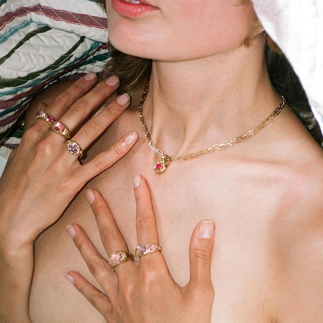

"Diseños atemporales que exaltan el poder de los materiales en bruto y la belleza de lo imperfecto".
Creamos piezas artesanales únicas y exclusivas con fuerte atención al detalle, priorizando el contacto personalizado con el cliente.

Reinvindicamos los procesos de creación naturales y sustentables, trabajando cada pieza a medida con materiales nobles.
